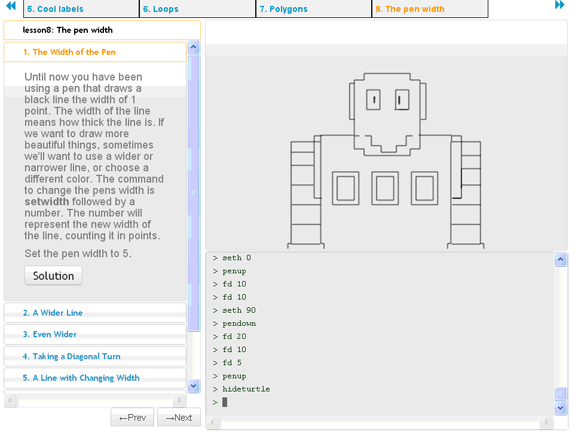

‘An overreliance on quantitative visualizations masks the ambiguities of the world the visualizations pur- port to represent.’ – Johanna Drucker
The book is dedicated to an investigation of how and what “we” see in relation to how and what “we” know, both historically and in a contemporary context. Now with the advent of digital means to manipulate and produce data we can all produce timelines without giving a thought to the revolution in the conceptualization of time and history.
‘Programming as a 21st century skill, a skill that you need to be able to participate in the labor market in the 21st century.’ - Barack Obama
I believe it is important that today’s children can learn to mask an ambiguity on every interface that is produced. They can learn to understand what it, for example an image, actually means, without looking at it in a super cially way, with the idea that something is nothing more than just an image or an interface.
Software is really about humanity, it’s really about helping people by using computer technology. We all depend on technology to communicate, to bank, to see information, and none of us know how to read and write code or how to deal with technology. A lot of companies proceed literally with the policy to hire as many talented engineers as they can nd. The whole limit in the system is that there just aren’t enough people who are trained and have these skills today. Whether you’re trying to make a lot of mo- ney or whether you just want to change the world, computer programming is an incredibly empowering skill to learn.
‘Everybody in this country should l earn how to program a computer... because it teaches you how to think.’ – Steve jobs
I believe that coding and understanding the layers of an interface is really important, in order to create innovative ideas now-a-days. Computational thin- king is ‘the process of (re) formulation problems in such a way that it becomes possible to solve the problem with computer technology’. Children are very handy with Facebook, but if they have to ad- just something in the browser settings, they seem to know a very little. They use the computer all day long, but they are not necessarily computer skillful.
But what if children learn how a computer thinks with lessons on an elementary school? Using a program such as Logo, will children help to think computational in an early stage. Logo is designed in a way that children make the computer learn things, instead of the other way around. The child writes new commands for a robot, the Logo Turtle. By doing this he discovers the logic of the language. Programming the turtle starts with re ecting on how you do what you want the turtle to do. As a result, the Turtle’s education can lead to re ections on one’s own acti- ons and one’s own thinking. I believe that computers have a strong, positive in uence on thinking skills.
‘To be able to actually come up with an idea and then see it in your hands. Then be able to press a button and have it be in millions of people hands. I mean, I think we’re the rst generation in the world that’s really ever had that kind of experience.’
– Drew, created Drobpox.
The main goal of these lessons is structured thinking: Programming can teach this in a friendly way. It is not that the teacher puts a red line through your work, because you made a mistake. If the program doesn’t work, the children are stimulated to reformulate: I clicked two times here and three times there, what will happen if I turn that around? Failure becomes a natural part of learning. Logo developer Seymour Papert expresses this in Mindstorms as follows: ‘Many children are being held back in their learning, by a model of learning which you either understand, or do not. But if you learn to program, you almost never have the rst time right.
So, in the end, you do not only have more abilities in future jobs. You can learn how to think structured and reformulate your learning proces. And hopefully, fear of failure will be less occurrence in the future.
